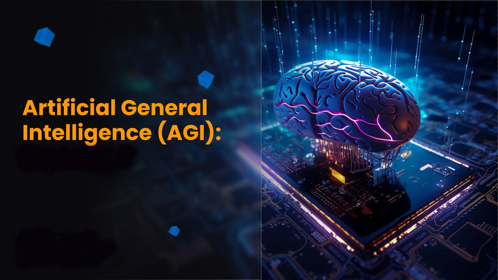
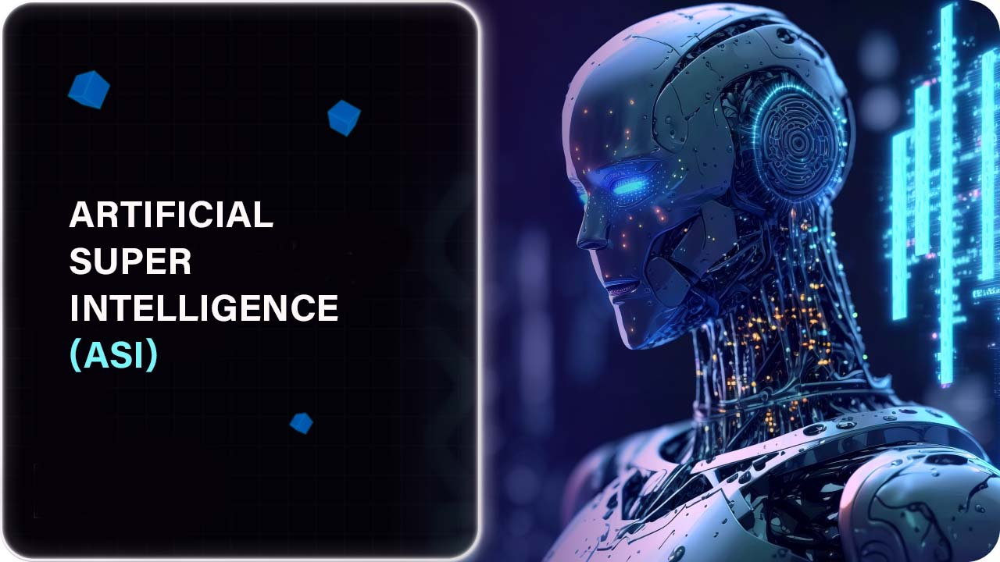
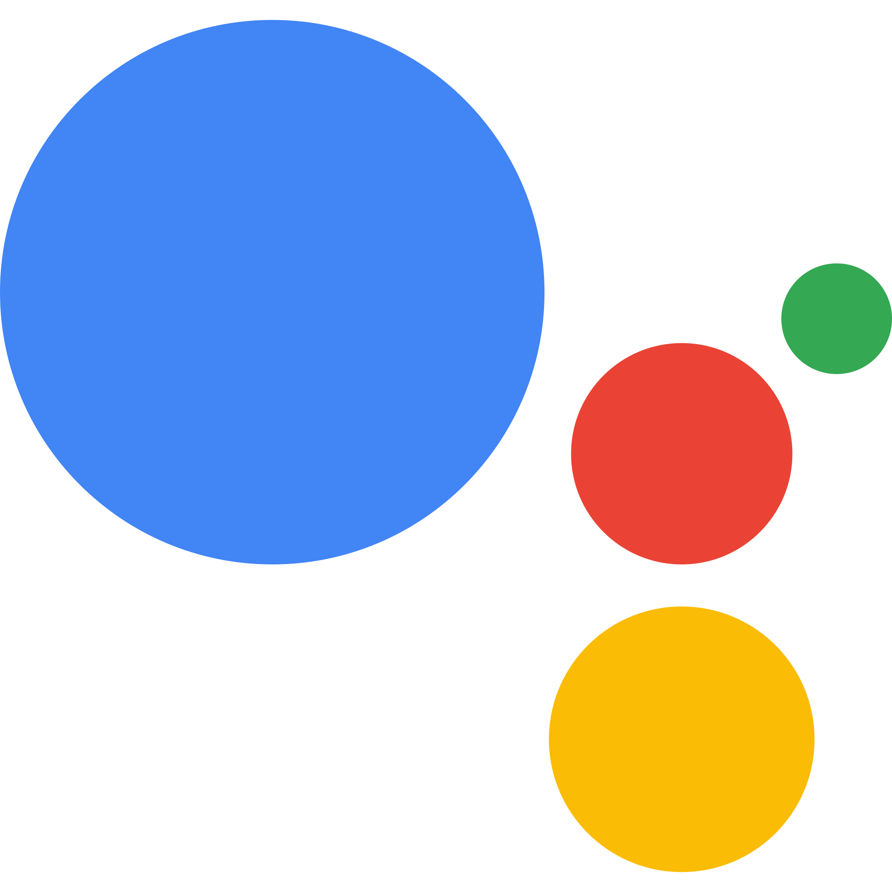

Artificial intelligence is the ability of a computer or computer-controlled robot to perform tasks that are commonly associated with the intellectual processes characteristic of humans, such as the ability to reason.
AGI is a theoretical pursuit to develop AI systems that possess autonomous self-control, a reasonable degree of self-understanding, and the ability to learn new skills.
ASI, or Artificial Superintelligence, refers to AI surpassing human intelligence, potentially revolutionizing fields while posing existential risks.
Chat Gpt
DeepBrain AI
GitHub Copilot

Gemini

Google Assistant
Devin AI

Alexa

Devika AI

Mid Journey

Phonic Mind